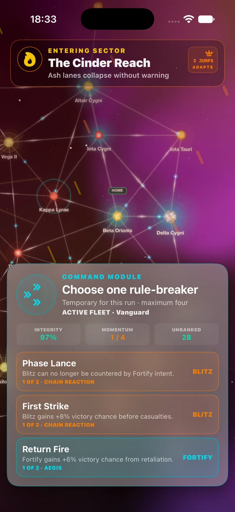

Build for the fight. Plan for the way home.
Fleet Commander build guide: understand module combinations, tactical trade-offs, salvage, and extraction in the upcoming Frontier Runs update.

Start with the module’s actual rule
Builds are about interactions. Read the rule text before deciding that a reward fits your fleet. Overkill Protocol rewards a winning Blitz with additional salvage; Wide Sweep rewards a winning Flank. These point toward different tactical preferences, but neither is a reason to ignore an unfavourable forecast.
Separate winning from surviving
Ablative Screen reduces casualty bounds for Fortify, while Return Fire improves that order’s victory chance. Survival and victory are related but different goals. If the next encounter puts your remaining integrity at risk, examine both the forecast and the potential losses instead of selecting only the largest reward.
Let a new module change the plan
Deep Scanner makes Flank treat route Danger as one lower. A reward like this can change the value of a route you previously wanted to avoid. Check the updated in-game forecast after drafting: it reflects the current encounter and build more usefully than a fixed build recipe.
Know what is at stake
Unbanked salvage and persistent reserves are different. Extracting secures gains; continuing exposes the run to more encounters. Defeat does not follow a blanket lose-everything rule: the recovery rules and modules such as Black Box Cache affect what is banked. Read the current debrief rather than assuming all salvage was lost.
Use extraction as part of the build
A profitable run does not have to end at the final showdown. If your modules generated salvage but left your fleet poorly suited to the next fight, extraction can be the coherent finish to that build. If your combination is still effective, continuing may be worth the risk. The decision belongs to you.
Before a rival showdown
Re-read the enemy and its current stage. A multi-stage encounter can change what your next order needs to achieve. Adapt when the battle changes, then use the result and fleet history to inform the next run. All examples here refer to the upcoming 1.2.0 Frontier Runs release; in-game rule text remains the authority.